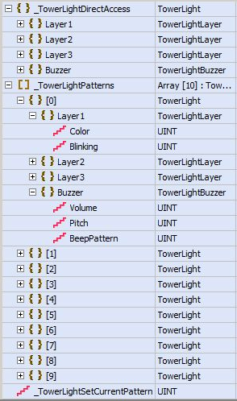
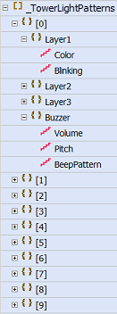
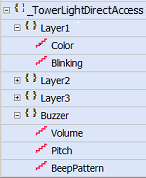

|
|
|
|
|
|
|
|
The Tower Light is an external hardware device that you can connect to your target machine to indicate the current state based on the color that displays on the tower light. You can set up one tower light for each target machine.
On the Editor, for the three-layer tower light you can set up many patterns using the Pattern Configuration dialog box. Use a Tower Light Toolchest part on a secured panel to allow authorized operators to modify or test pattern configurations at run time. You can create parts, such as a numeric display or a switch, and assign a tower light variable to the part.
Changes made to pattern configurations at run time will create discrepancies with the build-time application. When downloading the project to the target machine, the run-time settings are preserved if you select Preserve Run-Time Data in the Target properties. If this option is not selected, the pattern configurations in build time will overwrite the modified pattern configurations in run time.

Not all target machines support the tower light. For a list of which target machines support the tower light, see Appendix 5, Hardware Specifications.
To set up the tower light in your project, follow these steps:
Connect the tower light to the target machine. For more information, see Connecting the Tower Light to the Target Machine.
Add the tower light to your project. For more information, see Section 24.7.1, Adding the Tower Light.
To enable the operator to make pattern configuration changes at run time:
Draw the Tower Light Toolchest part onto your panel. For more information, see Section 24.7.2, Drawing the Tower Light Toolchest Part.
–or–
Add parts to your panel. For more information, see Section 24.7.3, Adding Parts to Control the Tower Light.
Once you add the tower light to the project, the variables for configuring the tower light are automatically created.

The tower light structure variables are:
_TowerLightDirectAccess - A structure variable to change the layer properties and buzzer properties for the tower light. When an operator writes to an element in the _TowerLightDirectAccess structure, for example, _TowerLightDirectAccess.Layer1.Color or _TowerLightDirectAccess.Buzzer.Pitch, the tower light is immediately updated. However, any changes made to the properties here do not affect the pattern configuration.
_TowerLightPatterns - An array variable to change the various tower light pattern configurations. The size of the array is fixed to 10. When an operator writes to an element in the _TowerLightPatterns structure, for example, _TowerLightPatterns.2.Layer1.Blinking, the change is made to the pattern configuration.
_TowerLightSetCurrentPattern - An external integer variable that specifies the pattern for the tower light to display. When an operator writes a value ([0] - [9]) to the _TowerLightSetCurrentPattern variable, that specific tower pattern is set, and the tower light displays the new colors and sound. All the values in the _TowerLightDirectAccess structure are updated accordingly.

If you delete the TowerLight driver, variables that were created when the driver was added are also deleted. However, their data type definitions (TowerLight, TowerLightLayer, TowerLightBuzzer) will remain. As a result, you cannot use the names TowerLight, TowerLightLayer, or TowerLightBuzzer for any objects in your application. To resolve this, delete the data type definitions in the User Data Types dialog box.
The following table describes the values for the:
_TowerLightSetCurrentPattern variable, and
Each element in the _TowerLightPatterns and _TowerLightDirectAccess structures.
|
Variable |
Value |
||
|
_TowerLightSetCurrentPattern |
0 to 9 |
||
|
Structures |
Element |
Value |
|
|---|---|---|---|
|
_TowerLightPatterns 
|
_TowerLightDirectAccess  |
Color |
|
|
Blinking |
|
||
|
Volume |
|
||
|
Pitch |
|
||
|
BeepPattern |
|
||
|
|
|
UNINTENDED EQUIPMENT OPERATION When you connect one or more USB devices to a target machine via a USB hub, you must use a USB hub with external power supply. Failure to follow these instructions can result in death, serious injury, or equipment damage. |
Connect the target machine to the tower light via a USB cable, Type A to mini-B. You can use a commercial-type USB cable (Type A/mini-B).
You can use a tower light for many purposes in your environment. For example, you can set up a tower light to display a green color if an operator in a factory is working in a normal state, an amber color to indicate a warning that the operator is about to run out of materials, and a red color to indicate a problem state because the operator has run out of materials. In this case, three switches have been created at build time to enable the operator to control and manage the current state.
The operator's tower light is indicating a problem state (Pattern 0, red, Fast interval beep), which needs to be changed to a normal state (Pattern 1, green, Slow interval beep), since the operator has received more materials. To do this, the operator presses a switch that writes a value to the _TowerLightSetCurrentPattern variable to change from Pattern 0 to Pattern 1.
The tower light watchdog monitors the tower light and the target machine for activity. Every 1 second, the target machine sends a heartbeat to the tower light to indicate it is active, regardless of whether it has any settings to communicate. The following tower light states (HMI Down State and Initialized State) describe the two patterns with special meaning to the tower light. The system designer is responsible to ensure that there is no confusion for operators if these states are used for other purposes.
HMI Down State
If the tower light does not receive a heartbeat after 3 seconds, the tower light enters the state to indicate the target machine is no longer active due to, for example, communication or connection issues. In this state, the tower light displays as follows:
Three layers red
Slow blinking
High volume
Slow interval beeping
Low pitch
The tower light continues in this state until it detects a heartbeat from the target machine again.

The HMI Down State is an indication of a target machine's connectivity or communication status, not its power status. A tower light that is directly connected to a target machine with a USB cable uses the target machine as its power source, and will shut down if the target machine powers down or goes through a power cycle. Use a powered USB hub when testing the tower light to ensure that powering down of the target machine does not affect tower light operations.
Initialized State
When the tower light recovers from a power cycle, the tower light will indicate an initialized state. In this state, the tower light displays as follows:
Off
Amber
Off

The Tower Light Watchdog starts after receiving the first heartbeat from the target machine. If the target machine does not send the first heartbeat for any reason (such as the Tower Light is not configured), the Tower Light continues to display its Initialized State. There is no other indication that the target machine and tower light are not communicating.